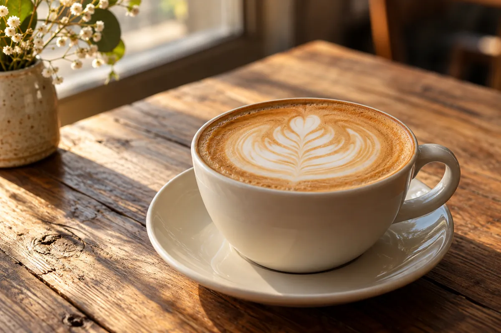
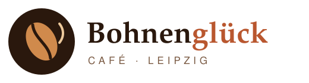
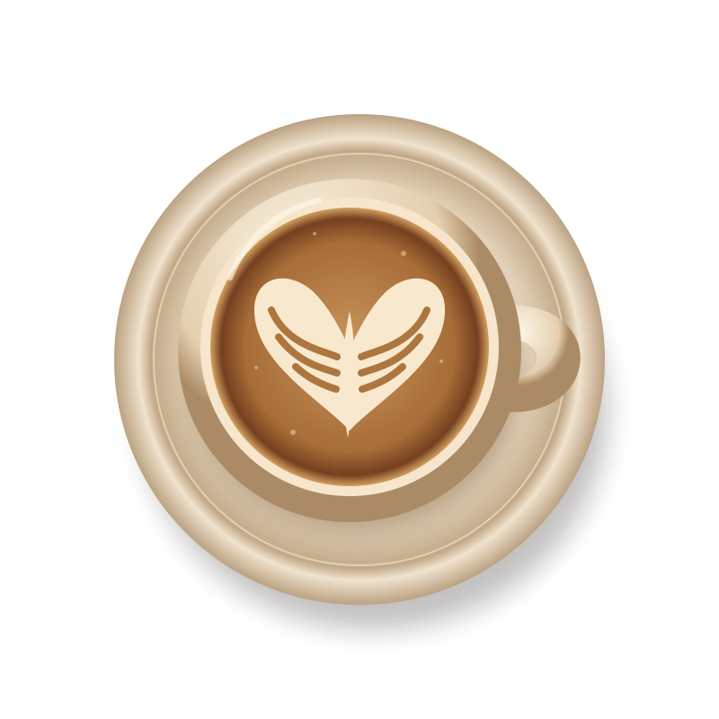
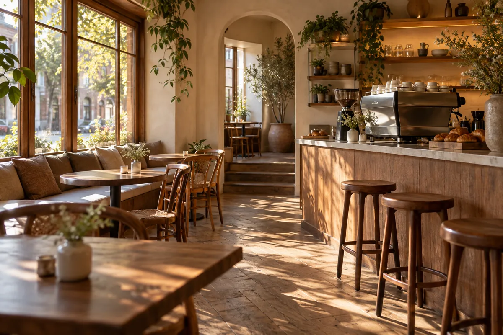
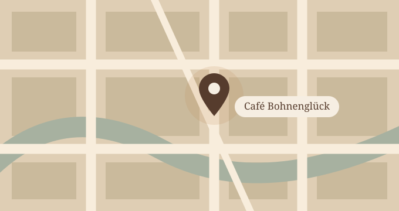

Cappuccino
3,60 €

Ihr gemütliches Café in Leipzig
Kaffee aus der Siebträgermaschine und hausgemachter Kuchen für alle, die eine gemütliche Pause in Leipzig suchen.
Fiktives Café · Beispielseite für den Unterricht
Unser Angebot

Das Café Bohnenglück ist ein kleines Café mitten in Leipzig.
Wir servieren frisch gemahlenen Kaffee aus unserer Siebträgermaschine und hausgemachten Kuchen.
8Uhr
Montag bis Freitag geöffnet ab18Uhr
Montag bis Freitag geöffnet bis9Uhr
Samstag und Sonntag geöffnet ab17Uhr
Samstag und Sonntag geöffnet bisNach angegebenen Zeiten · Europe/Berlin
Beispielseite für den Unterricht
Café Bohnenglück
Musterstraße 12, 04109 Leipzig
Beispieladresse · kein bestätigter Standort

Auf dieser Beispielseite umfasst das Angebot frisch gemahlenen Kaffee aus der Siebträgermaschine und hausgemachten Kuchen. Gezeigt werden Cappuccino, Espresso, Latte Macchiato und Flat White.
Die Beispielzeiten sind Montag bis Freitag von 8 bis 18 Uhr und Samstag und Sonntag von 9 bis 17 Uhr. Feiertage sind nicht berücksichtigt.
Die Beispielpreise sind: Cappuccino 3,60 €, Espresso 2,40 €, Latte Macchiato 3,90 € und Flat White 4,10 €.
Diese Webseite ist ein Unterrichtsbeispiel für ein Café in Leipzig. Musterstraße 12 und die Telefonnummer sind Beispieldaten, keine bestätigten Kontaktdaten. Die Caféfotos sind KI-generierte Illustrationen.